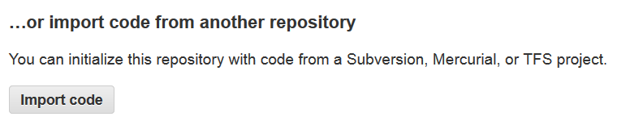
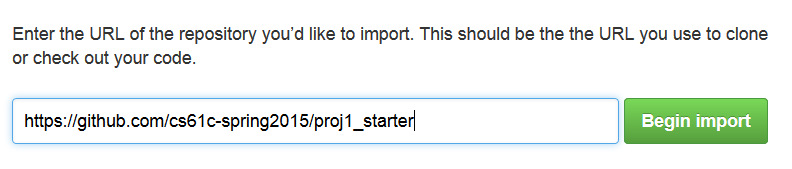
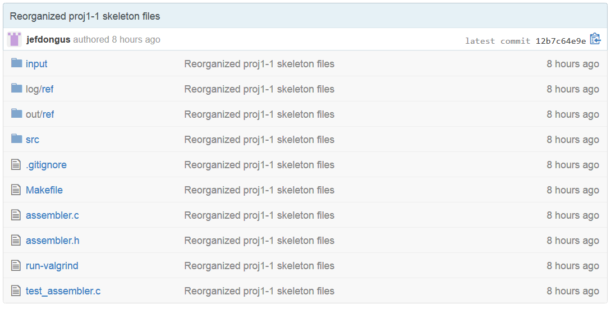

Due Sunday, March 1, 2015 @ 11:59pm
IMPORTANT INFO - PLEASE READ
This project is due on March 1st, and project 1-2 is due on March 5th. Plenty of time, right? Well, you have three weeks for a project with two parts, a midterm, and a (written) homework. So you do not have a lot of time.
The project (in total) is worth 5% of your grade, whereas midterm 1 is worth 15%, so definitely devote enough time for the midterm. However, doing this project (especially part 2, since we have not done much MIPS coding yet) may help you on the exam, so it is in your interest to work on the project as well. We decided to push the due date of this project back so that you can divide your time more flexibly. Do not procrastinate.
So What Is This About?
In this part of the project, we will be writing an assembler that translates a subset of the MIPS instruction set to machine code. Our assembler is a two-pass assembler similar to the one described in lecture. However, we will only assemble the .text segment. At a high level, the functionality of our assembler can be divided as follows:
Pass 1: Reads the input (.s) file. Comments are stripped, pseudoinstructions are expanded, and the address of each label is recorded into the symbol table. Input validation of the labels and pseudoinstructions is performed here. The output is written to an intermediate (.int) file .
Pass 2: Reads the intermediate file and translates each instruction to machine code. Instruction syntax and arguments are validated at this step. The relocation table is generated, and the instructions, symbol table, and relocation table are written to an object (.out) file.
The Instruction Set
Please consult the MIPS Green Sheet for register numbers, instruction opcodes, and bitwise formats. Our asembler will support the following registers: $zero, $at, $v0, $a0 - $a3, $t0 - $t3, $s0 - $s3, $sp, and $ra. The name $0 can be used in lieu of $zero. Other register numbers (eg. $1, $2, etc.) are not supported.
We will have 18 instructions and 2 pseudoinstructions to assemble. The instructions are:
| Instruction | Format |
| Add Unsigned | addu $rd, $rs, $rt |
| Or | or $rd, $rs, $rt |
| Set Less Than | slt $rd, $rs, $rt |
| Set Less Than Unsigned | sltu $rd, $rs, $rt |
| Jump Register | jr $rs |
| Shift Left Logical | sll $rd, $rt, shamt |
| Add Immediate Unsigned | addiu $rt, $rs, immediate |
| Or Immediate | ori $rt, $rs, immediate |
| Load Upper Immediate | lui $rt, immediate |
| Load Byte | lb $rt, offset($rs) |
| Load Byte Unsigned | lbu $rt, offset($rs) |
| Load Word | lw $rt, offset($rs) |
| Store Byte | sb $rt, offset($rs) |
| Store Word | sw $rt, offset($rs) |
| Branch on Equal | beq $rs, $rt, label |
| Branch on Not Equal | bne $rs, $rt, label |
| Jump | j label |
| Jump and Link | jal label |
The pseudoinstructions are:
| Pseudoinstruction | Format |
| Load Immediate | li $rt, immediate |
| Branch on Less Than | blt $rs, $rt, label |
Implementation Steps
Please note that your project will be graded on the HIVE machines. While you are free to develop on other machines, you need to make sure that your code compiles and runs without errors on the hive machines before submitting. If you do not, you run the risk of turning in non-compiling code and getting a ZERO on the entire project.
Step 0: Obtaining the Files
To make this process go as smoothly as possible, make sure you:
- Use the shared proj1-XX-YY repositories for this project, NOT your individual repositories.
- Create your shared git repository outside of any existing repositories (unless you really know what you're doing).
If your shared repository is empty, you can use the GitHub importer by going to the repository's page (https://github.com/cs61c-spring2015/cs61c-XX-YY), scrolling to the bottom, and clicking the import button:
Click on "Import Code", and on the next screen enter the URL of the starter repository (https://github.com/cs61c-spring2015/proj1_starter):
It will take GitHub a few moments to import the code. After it is done, your repository should have the same files as the starter repository:
Now you can clone the repository to your cs61c account/your computer, and then add the starter repository as a remote:
cd ~ # Make sure you are outside of any existing repositories (eg. ~/work) git clone git@github.com:cs61c-spring2015/proj1-XX-YY.git cd proj1-XX-YY # Go inside the directory that was created git remote add proj1_starter git@github.com:cs61c-spring2015/proj1_starter
If you have already made commits to your shared repository, then simply add the
# Inside of your proj1-XX-YY repository git remote add proj1_starter git@github.com:cs61c-spring2015/proj1_starter git fetch proj1_starter git merge proj1_starter/master -m "merge proj1-1 skeleton code"
You can compile you code by typing make. At first, you will get a bunch of -Wunused-variable and -Wunused-function warnings. The warnings tell you that variables/functions were declared, but were not used in your code. Don't worry, as you complete the assigment the warnings will go away.